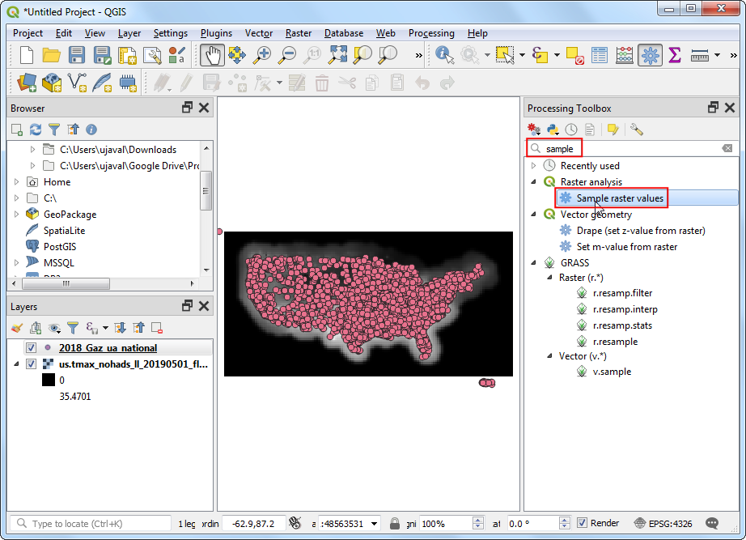
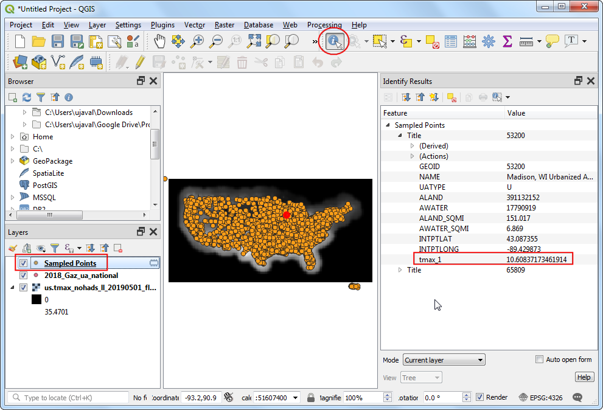

Ujaval Gandhi
Ujaval Gandhi점 또는 다각형을 이용한 래스터 데이터 표본 추출 작업(QGIS3)¶
많은 과학적 그리고 환경적 데이터셋은 그리드 래스터 데이터입니다. 해발고도 데이터 (DEM) 또한 래스터 파일로 배포되고 있습니다. 이러한 래스터 파일에서 표현되는 매개변수는 래스터의 픽셀값으로 부호화 됩니다. 종종 어떤 위치의 픽셀값을 추출하거나 어떤 지역을 모아서 수집할 필요가 있습니다. QGIS에 이런 기능이 processing algorithms을 통해 사용할 수 있습니다. point layers의 경우``Sample raster values ‘’및 polygon layers의 경우``Zonal Statistics ‘’
작업 개요¶
미국 대륙에서 매일 최고 온도의 래스터 그리드를 가지고 모든 도시지역의 기온을 포인트 레이어에서 추출하고 더불어 미국에서 각 군의 평균기온을 폴리곤 레이어에 추출할 필요가 있습니다.
기타 스킬¶
QGIS의 TOC에서 다중 레이어를 선택하고 삭제합니다.
데이터 획득¶
NOAA’s Climate Prediction Center 는 미국내 온도와 강수량과 관련된 `GIS data <http://www.cpc.ncep.noaa.gov/products/GIS/GIS_DATA/>`_를 제공합니다. `latest grid filei for maximum temperatures <ftp://ftp.cpc.ncep.noaa.gov/GIS/GRADS_GIS/GeoTIFF/TEMP/us_tmax/>`_를 다운로드 하십시오. 파일명은 ``us.tmax_nohads_ll_{YYYYMMDD}_float.tif``이 될 것입니다.
미국의 도시 지역을 나타내는 2018 US Gazetteer의 CSV 파일을 사용합니다. Urban Areas Gazetteer 파일을 다운로드하십시오.
US Census Bureau provides TIGER/Line Shapefiles. You can visit the FTP site and download Census Tracts Shapefile.
아래 링크에서 이번예제에 사용되는 샘플파일을 쉽게 내려받을 수 있습니다:
us.tmax_nohads_ll_20190501_float.tif
데이터 출처: [NOAACPC], [USGAZETTEER] [TIGER]
과정¶
2018_Gaz_ua_national.zip과 tl_2018_us_county.zip을 모두 압축 해제하여 컴퓨터의 폴더에 추출하십시오. QGIS를 열고 QGIS Browser에서 us.tmax_nohads_ll_20190501_float.tif 파일을 찾아 캔버스로 끕니다.

레이어 패널에 새로운 래스터 레이어 us.tmax_nohads_ll_20190501_float가로드 된 것을 볼 수 있습니다. 이 래스터 레이어에는 섭씨 온도 단위로 기록 된 최대 온도가 포함됩니다. 다음으로 도시 지역 포인트 파일을로드합니다. 이 파일은 TSV (Tab Separated Values) 형식의 텍스트 파일로 제공됩니다. 데이터 소스 툴바에서 데이터 소스 관리자 열기 단추를 클릭하십시오.

구분 된 텍스트 탭으로 전환하십시오. 파일 이름 옆에있는 … 단추를 클릭하고 다운로드 한 텍스트 파일의 경로를 지정하십시오. 파일 형식 섹션에서 사용자 정의 구분 기호를 선택하고 탭을 확인하십시오. X 필드로 INTPTLONG을 선택하고 Y 필드로 INTPTLAT를 선택하십시오. 추가를 클릭 한 다음 닫기를 클릭하십시오.

새 포인트 레이어 2018_Gaz_ua_national이 레이어 패널에로드됩니다. 이제이 시점에서 래스터 레이어에서 값을 추출 할 준비가되었습니다. Processing ‣ Toolbox로 이동하십시오.

Raster analysis ‣ Sample raster values algorithm을 검색하고 찾습니다. 시작하려면 두 번 클릭하십시오.

입력 포인트 레이어로 2018_Gaz_ua_national을 선택하십시오. 샘플링 할 래스터 레이어로 us.tmax_nohads_ll_20190501_float를 선택하십시오. 고급 매개 변수를 펼치고 출력 열 접 두부로 tmax를 입력하십시오. 실행을 클릭하십시오. 처리가 완료되면 닫기를 클릭하십시오.

새로운 레이어 샘플 포인트가 레이어 패널에로드됩니다. 속성 도구 모음에서 식별 도구를 선택하고 아무 지점이나 클릭하십시오. 식별 결과 패널에 속성이 표시됩니다. 각 기능에 tmax_1이라는 새로운 속성이 추가 된 것을 볼 수 있습니다. 포인트 위치에서 추출 된 래스터 레이어의 픽셀 값입니다. 1은 래스터의 밴드 번호를 나타냅니다. 래스터 레이어에 여러 개의 밴드가있는 경우 출력 레이어에 여러 개의 새 열이 표시됩니다.

분석의 첫번째 부분이 완료되었습니다. 이제 불필요한 레이어를 제거해 봅시다. 쉬프트키 Shift 를 누른 채
sampled points와2018_Gaz_ua_national레이어를 선택합니다. 우측 클릭을 하고 QGIS TOC에서 제거하기 위해 삭제 :guilabel:`Remove`를 선택합니다.

이제 counties 레이어를 사용하여 래스터를 샘플링하고 각 군의 평균 온도를 계산합니다. QGIS 브라우저에서 tl_2018_us_county.shp 파일을 찾아 캔버스로 끕니다.

새 레이어 tl_2018_us_county가 레이어 패널에로드됩니다. Processing ‣ Toolbox로 이동하십시오.

Search and locate the algorithm and double-click to launch it.

us.tmax_nohads_ll_20190501_float를 래스터 레이어로, tl_2018_us_county를 영역을 포함하는 벡터 레이어로 선택하십시오. 출력 열 접 두부로 tmax_를 입력하십시오. 통계 옆의 …을 클릭하여 계산하십시오.

평균값 만 선택하고 확인을 클릭하십시오.

Now, click on the … next to Zonal Statistics and select Save to File option to save the output.

Browse to the folder where you want to save the output. Save the output layer as
us_county_tmax.shp. Click Run to start the processing. The algorithm may take a few minutes to complete and you will see the output layer added as soon as the processing finishes. Click Close.

Right-click the
us_county_tmaxlayer, and select Open Attribute Table.

You will see a new column called
tmax_meanadded in the attribute table. This contains the average temperature value extracted over the polygon for each feature. There are some null values because those counties (belonging to Alaska, Hawaii and Puerto Rico) are outside of the raster layer’s extent.

If you want to give feedback or share your experience with this tutorial, please comment below. (requires GitHub account)